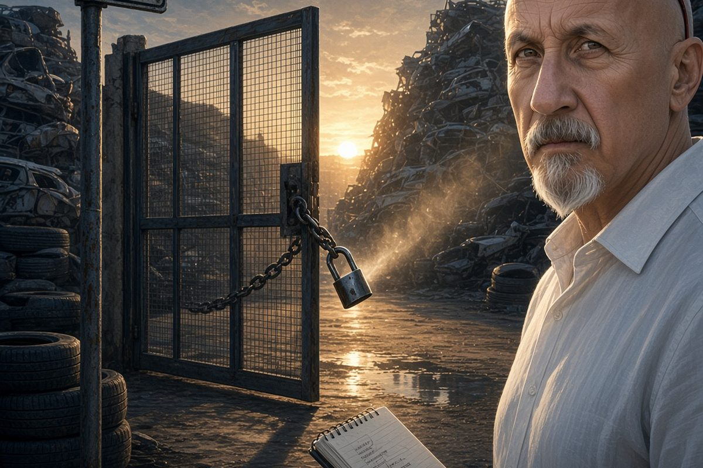

Cronaca · 12 ottobre 2026
L'impresa confiscata agli Ofria e quello che dicono le motivazioni

Depositate le motivazioni della sentenza di primo grado sulla Bellinvia, autodemolizioni di Barcellona Pozzo di Gotto sotto confisca dal 2011. Per la giudice l'azienda sarebbe rimasta condizionata dalla famiglia anche dopo i provvedimenti dello Stato.
di Franco Zanghì
In via Eolie, a Barcellona Pozzo di Gotto, c'è un piazzale di auto da demolire. L'insegna porta ancora il nome di Carmela Bellinvia, la donna a cui l'impresa è intestata dal 1980: rottamazione, ricambi usati, smaltimento di rifiuti anche speciali. Da quindici anni, sulla carta, quell'azienda non appartiene più alla famiglia che l'ha fondata. È stata sequestrata, poi confiscata, poi affidata a un amministratore giudiziario nominato dal tribunale.
Le motivazioni della sentenza di primo grado, depositate in questi giorni, raccontano un'altra cosa. Per la giudice quell'azienda, nonostante i sigilli, non sarebbe mai uscita davvero dall'orbita della famiglia Ofria.
La sentenza
La decisione è del 2 aprile 2026 ed è della giudice per l'udienza preliminare di Messina Alessandra Di Fresco, al termine di un processo celebrato con rito abbreviato: 15 condanne e un'assoluzione. Oltre 16 anni a Salvatore Ofria, detenuto al 41 bis e già condannato in via definitiva per associazione mafiosa; 15 anni e 2 mesi al fratello Domenico; oltre 14 anni a Giuseppe; 9 anni a Luisella Alesci. Chiara Ofria è stata assolta dall'accusa di peculato perché il fatto non sussiste. Le pene dei due fratelli variano di qualche mese da una fonte all'altra, e per questo sono indicate qui in forma prudenziale.
L'inchiesta nasce dall'operazione del 14 gennaio 2025, condotta dal Servizio centrale operativo, dalla Squadra mobile di Messina e dal commissariato di Barcellona sotto il coordinamento della Direzione distrettuale antimafia: 15 misure cautelari, 14 in carcere e una ai domiciliari. Fra le parti civili è stata riconosciuta l'Associazione antimafie Rita Atria.
Che cosa aggiungono le motivazioni
Nelle motivazioni la giudice descrive un'azienda nella quale Domenico Ofria, Giuseppe Ofria e Luisella Alesci sarebbero stati presenti con regolarità, anche in spazi dai quali avrebbero dovuto restare fuori. Non visite isolate: una presenza continua. Accanto alle presenze, la ricostruzione elenca le disponibilità verso i familiari di persone detenute per reati di mafia. Non minacce, favori: il potere consolidato non ha bisogno di alzare la voce, ha bisogno che si sappia a chi rivolgersi.
C'è poi il capitolo del denaro. Nelle motivazioni compare l'immagine di un borsello nero, che è il modo più diretto per dire che cosa sarebbe stata quella contabilità: una parte degli incassi nei registri ufficiali, una parte fuori, con ricambi venduti senza scritture. Un collaboratore di giustizia ha riferito di una conversazione nella quale si sarebbe parlato di un giro d'affari di 4 o 5 milioni di euro l'anno, accompagnato da una cifra analoga sottratta alla contabilità. È una dichiarazione, riportata da una sola fonte, non un dato accertato.
Il punto più delicato
L'amministratore giudiziario dell'impresa, nominato quindici anni fa, è il commercialista catanese Salvatore Virgillito. Nelle motivazioni la giudice ne descrive la condotta in termini molto critici. Ma in questa sentenza Virgillito non è stato giudicato: la sua posizione viaggia in un procedimento separato, è ancora aperta, e lui ha sempre respinto ogni accusa. Allo stesso modo un'altra imputata è stata rinviata a giudizio con rito ordinario e deve ancora essere giudicata.
Tutte le condanne qui richiamate sono di primo grado e non sono definitive. Restano due gradi di giudizio, e i difensori avevano annunciato che avrebbero valutato l'appello proprio dopo la lettura di queste motivazioni. Per chi è imputato in un processo ancora aperto vale la presunzione d'innocenza fino alla sentenza definitiva.
Di chi è, oggi, quella ditta
Mettendo in fila quello che risulta: un'impresa confiscata, un amministratore nominato dal tribunale, quindici anni di gestione pubblica e una sentenza di primo grado che, in quegli stessi quindici anni, ricostruisce un'azienda rimasta condizionata da chi avrebbe dovuto starne fuori. Su questo una posizione ce l'ho: una confisca senza un controllo vero non toglie niente a nessuno. Toglie un nome dai documenti e lascia tutto il resto dov'era. E se la ricostruzione della giudice reggerà nei gradi successivi, qui lo Stato è stato proprietario di un'azienda soltanto negli atti.
C'è un ultimo elemento, ed è quello che rende la storia davvero aperta. Nell'ottobre 2024 la Corte di cassazione ha annullato quella confisca, accogliendo la richiesta dei familiari, e ha chiesto che se ne rivalutassero i presupposti. Come sia finita quella rivalutazione, oggi, non risulta pubblicamente. Da una parte una sentenza che racconta un'azienda mai uscita dalle mani di una famiglia, dall'altra una confisca annullata e tutta da riesaminare. La domanda, e non la faccio per insinuare niente, è una sola: di chi è, oggi, quella ditta?
Fonti
- MessinaToday, il contenuto delle motivazioni della sentenza
- Gazzetta del Sud, le condanne del 2 aprile 2026 e i nomi
- TempoStretto, la sentenza sulla gestione dell'impresa confiscata
- Giornale di Sicilia, gli arresti del 14 gennaio 2025 a Barcellona Pozzo di Gotto e Milazzo
Il contenuto delle motivazioni è riportato finora da una sola testata, le pene indicate dalle fonti non coincidono per alcuni imputati e la rivalutazione della confisca disposta dalla Cassazione non ha, alla data di pubblicazione, un esito pubblicamente noto.